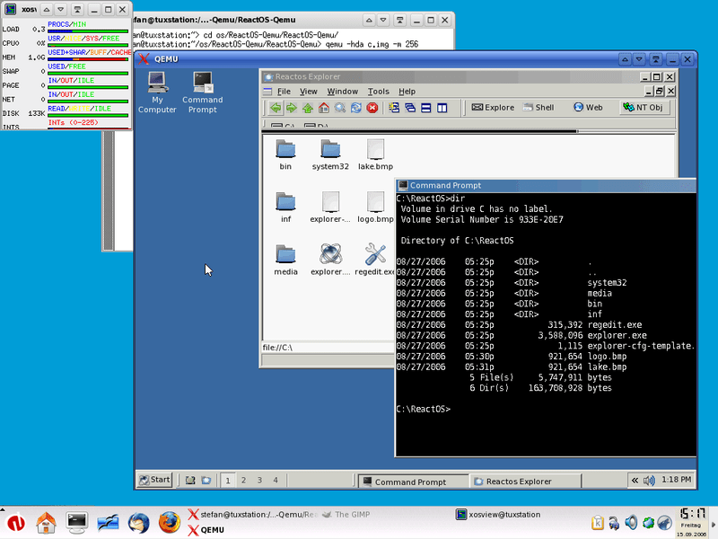
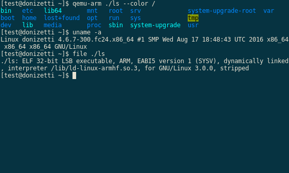
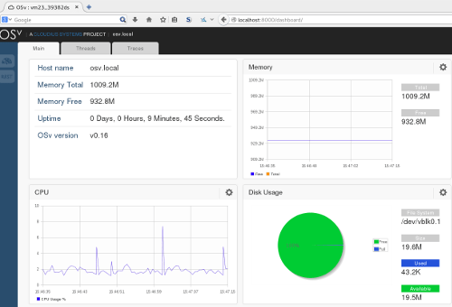
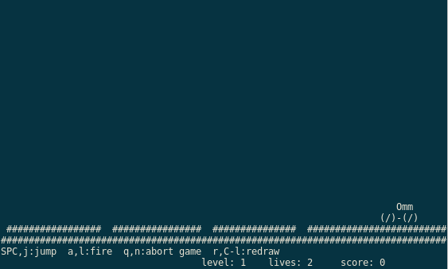
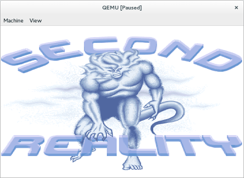

Run operating systems for any machine, on any supported architecture

Run programs for another Linux/BSD target, on any supported architecture

Run KVM and Xen virtual machines with near native performance


Full list of releases